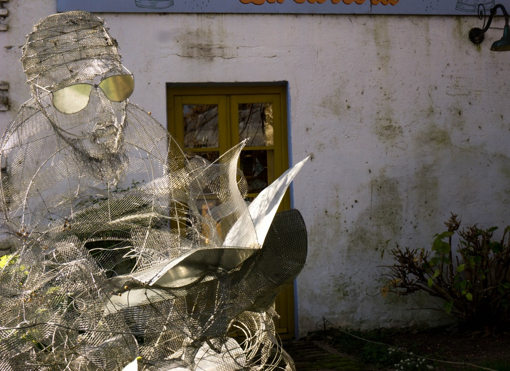

Skoro była część pierwsza, musi być i część druga. Oto i ona!
Podobnie jak wcześniej – książki wymienione są w dowolnej kolejności, a kilka moim zdaniem najciekawszych tytułów jest wytłuszczonych.
Kliknięcie w tytuł książki przeniesie na stronę lubimyczytać.
Jeśli ktoś czytał którąkolwiek z nich, chętnie posłucham opinii!

Piotr Tomza â€Pokolenie Kolosów†– autor przedstawia zwycięzców Kolosów w latach 2000-2014, opisy dosyć nierówne – niektóre wciągające, a przy innych zdziwienie, że tyle czasu (książki) poświęcone na sylwetkę.
Nikolas Bouvier â€Oswajanie świata†– z zasady ostatnio nie czytam książek, które nie są współczesne (tzn. są wydane wcześniej niż 20-30 lat temu), ale moja forumowa koleżanka tyle razy wspominała o tej książce, że postanowiłam dać jej szansę. I było warto – książka była rewelacyjna, ogromnie podobał mi się język, którym została napisana, brak pośpiechu w podróżowaniu autora i miejsca, które zostały opisane (poprzez Bałkany, Turcję, Iran i Afganistan aż po Indie). Po tej lekturze przejechanie Iranu śladami N.Bouviera było kolejną pozycją, która pojawiła się na mojej liście marzeń (nr 68).
â€Made in Poland. Antologia reporterów Dużego Formatu†– bardzo dobry zbiór.
Deborah Rodriguez â€Kawiarenka w Kabulu†– to powieść o Afganistanie, kraju do którego kiedyś na pewno pojadę, więc musi się znaleźć w zestawieniu. Sympatyczna, wzruszająca powieść chociaż nie jest to wielka literatura. Jeśli ktoś chciałby przeczytać powieść o Afganistanie polecam raczej pierwszą książkę tej autorki â€Szkoła piękności w Kabulu†gdzie autorka opowiada o założonej tam przez siebie szkole.
Kathryn Bonella â€Hotel Kerobokan. Piekło na rajskiej wyspie Bali†– ku przestrodze, jeśli ktoś jedzie na Bali i chce się bawić w narkotyki, ale poza tym raczej nie polecam, bo książka bardzo chaotyczna – ciekawa historia opowiedziana w nieciekawy sposób.
Tomek Michniewicz â€Samsara. Na drogach, których nie ma†– czytanie Tomka Michniewicza zaczęłam od â€Swoją drogą†po czym cofnełam się do wcześniejszych – i przeżyłam małe rozczarowanie, bo chociaż ta nie jest zła, to zdecydowanie gorsza od â€Swoją drogą†– no cóż, autor się rozwija, a ja wybrałam nieodpowiednią kolejność.
Alexandra Fuller â€Dziś wieczorem nie schodźmy na psy. Afrykańskie dzieciństwo†– zaintrygował mnie tytuł i spodziewałam się ciekawych historii, a otrzymałam nudną opowieść o dzieciństwie. Jedyne co wyniosłam z książki, to przekonanie, że niechęć Czarnych do Białych jest całkowicie uzasadniona jeśli ci Biali są tacy jak rodzina i znajomi autorki.
Być może znajdzie się ktoś kto ma inne zdanie, bo książka miała zdumiewająco wiele pozytywnych opinii.
Dariusz Zaborek â€Czesałam ciepłe króliki†– książka wobec, której żywię najbardziej ambiwalentne uczucia. Alicja Gawlikowska-Åšwierczyńska – lekarka, była więźniarka obozu w Ravensbrück – w wieku dziewięćdziesięciu dwóch lat opowiada D.Zaborkowi o tym co przeżyła. Czułam do bohaterki na zmianę niechęć za niemal psychopatyczny brak zrozumienia dla innych, którzy przeżyli, a którzy czują i pamiętają inaczej przy jednoczesnym współczuciu dla pacjentów, oraz podziw za optymizm i umiejętność 'wytłumaczenia’ sobie każdej, nawet najtragiczniejszej sytuacji. Mimo wszystko polecam – warto przeczytać.
Wojciech Cejrowski â€Wyspa na prerii†– z założenia nie kupuję książek W. Cejrowskiego, ale skoro leżała… trudno było nie zajrzeć. Jak zwykle – przyjemnie i lekko się czyta, ale coraz trudniej ocenić co się wydarzyło naprawdę, a co się autorowi wydawało.
Tadeusz Biedzki â€Sen pod baobabem†– dawno nie czytałam książki, która mnie tak wkurzyła, a ze względu na temat (Mali) wydawało mi się, że bardzo mi się spodoba… Niestety…
Na początku sobie pomyślałam, że kiedyś te 30-40 lat temu to się ciężko podróżowało, całe szczęście, że ja byłam w Afryce Zachodniej kilka lat temu…po czym ze zdumieniem odkryłam, że to podróż odbyta dosłownie 'przed chwilą’. OK, region ten sam, ale kraje inne, może w tych innych jest dużo gorzej?
Potem nie mogłam nadziwić się naiwność autora, który jedzie samochodem, w którym jego kierowca przewozi narkotyki mając po drodze kontrole. Autor twierdził, że innego wyjścia nie było. Jak już doczytałam, że facet dużo podrozuję to jeszcze mniej mogłam zrozumieć dlaczego daje się tak oszukiwać finansowo i nie spuści na drzewo gościa od narkotyków (chyba, że to były przygody, aby napisać książkę 🙂 ).
W końcu jednak, kiedy autor określił etiopskie wino tej (które naprawdę mi smakowało) â€alkoholem o smaku rzygowin†doszłam do wniosku, że to musi być inne postrzeganie świata.
Jennie Dielemans â€Witajcie w raju. Reportaże o przemyśle turystycznym†– lekka lektura, chociaż mało odkrywcza. Autorka miała ambicje być reporterką a wyszło powierzchowne nie-wiadomo-co.
Marcin Florian Gawrycki â€Podglądając Innego. Polscy travelebryci w Ameryce Łacińskiej†– Ciekawy temat i obserwacje.
Przeszkadzało mi jedynie styl pisania 'naukowca z polskiego uniwersytetu’ – chętnie przeczytałabym â€normalną†książkę, bo temat w sumie lekki: autor opisuje jak (często błędnie lub powierzchownie, a zazwyczaj z pozycji 'białego kolonizatora’) przedstawiają Amerykę Łacińską Wojciech Cejrowski, Elżbieta Dzikowska i Tony Halik, Robert Makłowicz oraz Martyna Wojciechowska.
Dla mnie była to niezwykle interesująca lektura – głównie ze względu na to, że większość opisywanych miejsc widziałam.
Kondrad Piskała â€Dryland†– niewiele jest polskich książek o Somalii więc jeśli ktoś jest zainteresowany tematem naprawdę warto sięgnąć po tę pozycję. Podobało mi się, że autor pisze też o Somalijczykach w Polsce – ciekawe poÅ‚Ä…czenie.
Moje początkowe rozczarowanie wynikało z faktu, jak ta książka jest reklamowana. Temat zainteresował mnie ponieważ rok temu byłam w Somalilandzie (niepodległej części Somalii, nieuznawanej przez inne kraje, ale bezpiecznej do podróżowania) i chciałam poczytać o 'prawdziwej’ Somalii, tej do której turyści nie jeżdżą. Niestety spora część to opis Somalilandu, a ten naprawdę interesujący mnie temat, pojawia się po przeczytaniu 80% książki kiedy autor przyjeżdża do Mogadiszu.
Mimo wszystko – warto, również ze względu na solidnie przygotowany rys historyczny.
Jerzy A.Wlazło, Zbigniew Pawlka â€Pęknięte miasto. Biesłan†– niezwykle poruszająca opowieść o tragicznych wydarzeniach z 2004 roku kiedy w ataku na szkołę w Biesłanie zginęło ponad 300 osób. Książka opisuje nie tylko atak, ale również to co działo w kolejnych latach, a także przedstawia historię Kaukazu i opisuje codzienne życie. Niezwykły reportaż – jeden z najlepszych przeczytanych w 2014 roku!
Dan Kieran â€O wolnym podróżowaniu†– zgadzam się z autorem w jednym: wolne podróżowanie jest świetne. Poza tym: nuuuda.
Małgorzata Szumska â€Zielona sukienka†– fascynująca historia rodzina, opisana lekko lecz wzruszająca. Polecam.
I to by było na tyle, chyba zacznę częściej przedstawiać lektury podróżniczo-reportażowe, bo trochę się tego zbiera.
Czytaliście którąś tych pozycji?
A może czytaliście coś innego, co chcecie polecić?
Â


{kind=link}